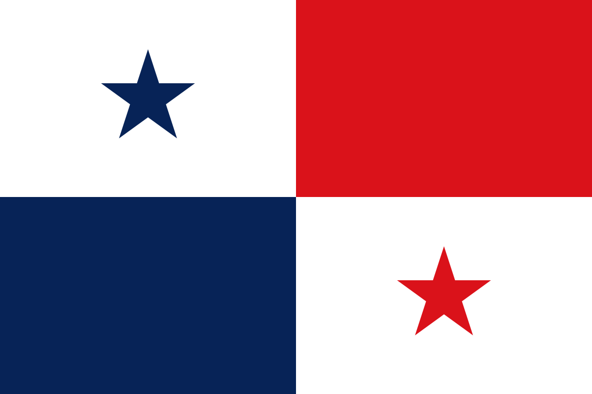

PANAMÁ

HISTORIA
La historia de Panamá abarca desde la llegada de sus primeros habitantes hasta la actualidad. Su historia
se divide en cuatro grandes épocas: prehispánica, virreinal, colombiana y republicana. También se
encuentran subperiodos como la conquista española, la independencia de Panamá del Imperio español, la
separación de Panamá de Colombia, la dictadura militar en Panamá, y el regreso a la Democracia.
La ciudad de Panamá fue fundada el 15 de agosto de 1519 por Pedro Arias Dávila, siendo la
primera ciudad
española en las costas del Mar del Sur u Océano Pacífico y la más antigua de Tierra Firme que existe
hasta nuestros días como ciudad. Su fundación reemplazó a las anteriores ciudades de Santa María la
Antigua del Darién y Acla, convirtiéndose en la capital de Castilla del Oro. El 15 de septiembre de 1521
recibió, mediante real cédula, el título de ciudad y un escudo de armas conferido por Carlos V de
España.
BANDERA
La bandera de la República de Panamá es el más conocido e importante de los símbolos patrios de la República de Panamá. Consiste en un rectángulo dividido en cuatro cuarteles: el superior izquierdo es una estrella azul de cinco puntas sobre fondo blanco; el superior derecho es de color rojo; el inferior izquierdo es de color azul; y el inferior derecho es una estrella roja de cinco puntas sobre fondo blanco. En el marco de la celebración de las fiestas patrias, cada 4 de noviembre se celebra en Panamá el Día de los Símbolos Patrios, como fiesta nacional. Con motivo de esta gran celebración se realizan actos conmemorativos como desfiles y ceremonias, en los cuales se le rinde tributo a la bandera y los otros símbolos patrios.
AVE

Cada 10 de abril se celebra el día del Águila Harpía, declarada ave nacional de la República de Panamá, según Ley 18 del 10 de abril de 2002. La harpía es el águila más grande del Hemisferio Occidental y del Hemisferio Austral; es la única especie del género Harpia. Su hábitat es el bosque lluvioso. Se trata de una de las águilas más grandes del mundo. Se alimenta de mamíferos como osos perezosos, gatos solos; así como aves y réptiles.
ÁRBOL
El nombre genérico del árbol Panamá deriva del latín “Stercus” que significa excremento, debido al olor característico de hojas y flores. Es de la misma familia que el árbol de cacao. Es el árbol nacional de la República de Panamá y se considera que éste originó el nombre del país. Fue declarado oficialmente con el Decreto de Gabinete No. 371 del 26 de noviembre de 1969.
FLOR

La flor del Espíritu Santo (Peristeria elata) pertenece a la familia de las orquídeas, es una planta de terrestre o epífita, de hojas carnosas, originaria de Panamá, de donde es flor nacional y hay mayor cantidad conocida, y también encontrada en algunas áreas de Colombia y Ecuador.
ESCUDO
El escudo panameño consiste de dos cuarteles superiores iguales; el de la izquierda, en campo plateado, presenta un sable y un fusil para simbolizar el estado de alerta del pueblo panameño en defensa de sus derechos y soberanía; el cuartel derecho presenta una pala y un azadón que son los símbolos del trabajo. En el rectángulo central a todo lo ancho del escudo esta el Istmo con los dos océanos y en el cielo un sol que se oculta y una luna que sale; la hora crepuscular que marca el instante de la independencia. En el cuartel inferior izquierdo una cornucopia de monedas sobre en un campo azul simboliza la abundancia, y a la derecha, una rueda alada sobre campo blanco que representa el progreso. Sobre el escudo hay un Águila que simboliza la soberanía y que sujeta en el pico una cinta de plata que lleva el lema PRO MUNDI BENEFICIO -Para Beneficio del Mundo. Las nueve estrellas sobre el águila representan las nueve provincias de la República.
PROVINCIAS
LPanamá se divide en 10 provincias, 5 comarcas de indígenas (Guna Yala, Ngöbé-Bugle , Emberá Wounaan, Wargandí y Madugandí), 72 distritos y 693 corregimientos.
- Colón
- Coclé
- Bocas del Toro
- Chiriquí
- Darién
- Herrera
- Los Santos
- Panamá
- Veraguas
- Panamá óeste